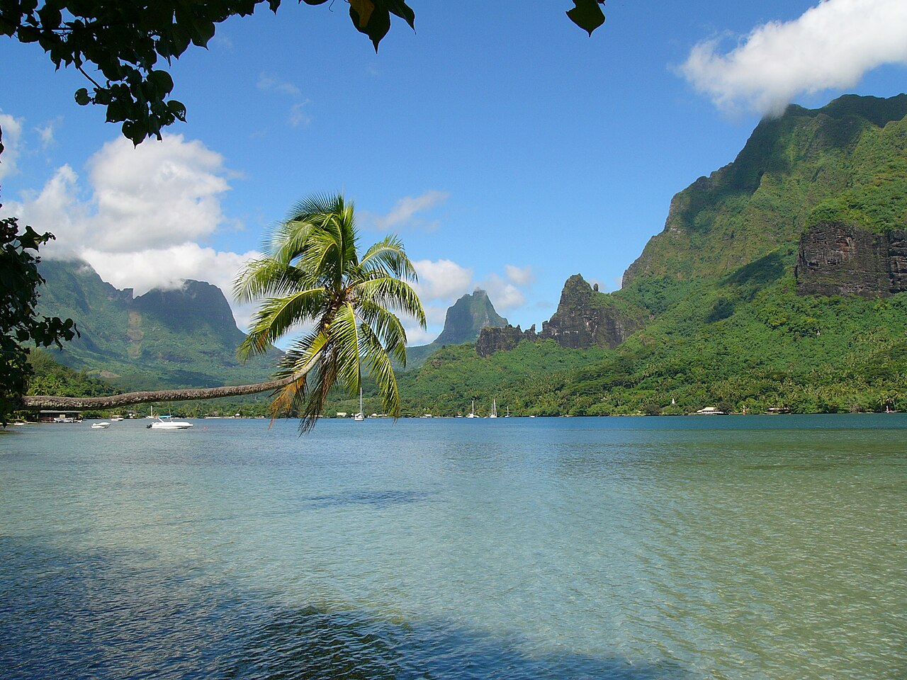

Papeete in a Port Day: The Market, the Food Trucks, and the Moorea Decision

Papeete is the most walkable port in French Polynesia: the ship docks downtown, the market is minutes from the gangway, and the whole centre fits in an easy morning on foot. The real question of a Papeete port day is not what to do in town — it is whether to stay in town at all, or spend the day across the water on Moorea, where the lagoon is the colour on the postcards. They are not the same day, and the ferry timetable decides which one you get.
Arriving: downtown, on foot
Cruise ships dock right in downtown Papeete, and the city starts at the pier. The Marché de Papeete — the covered municipal market — is about a two-minute walk, and it is where the day should begin: fruit, flowers, pareu (the local sarongs), black pearls, and the food stalls downstairs. The market is open roughly 7:30 AM to 6:00 PM on weekdays; on Sundays it winds down by about 9:00 AM, so a Sunday port day means the market first, before anything else. Cash is useful here — small vendors prefer it, and the ATMs on the waterfront dispense Pacific francs (XPF).
Confirm the all-aboard time at the gangway — and note that the Moorea ferries stop running in the late afternoon, so a Moorea day has a hard deadline that has nothing to do with the ship.
The morning: the market and the waterfront
Walk the market first. Upstairs is crafts and pareu; downstairs is food — poisson cru (raw fish marinated in lime and coconut milk) is the dish to try, and it costs a fraction of what the same thing costs in a restaurant. From the market, the waterfront promenade runs along the harbour past the Notre Dame Cathedral and the town hall gardens to Place Vai'ete. The whole loop is flat, shaded in parts, and takes about an hour at a strolling pace.
If the market is quiet, the alternative morning is the waterfront: the pearl shops along the boulevard, the Robert Wan pearl museum, and the small shops selling vanilla, monoi oil, and local crafts. Papeete is not a big shopping city — the market and a few streets are the whole of it.
The Moorea decision
Moorea is the island you can see from Papeete's waterfront — a jagged green silhouette about 17 km across the water, and the best day trip in French Polynesia. The ferry terminal is about a seven-minute walk from the cruise pier. Aremiti and Terevau run the crossing in about 30–45 minutes; the fare is roughly 2,030–2,350 XPF each way (about US$17–22), and the last return ferry is around 5:00 PM — miss it and you are spending the night on Moorea, so the return time is the first thing to check, not the last.
On Moorea, the day is the lagoon: a snorkelling or lagoon tour from Cook's Bay or Opunohu Bay, with rays and reef sharks in water so clear it looks shallow from the boat. Book the tour before the cruise — the good ones sell out. If you go without a tour, a rental car or a circle-island drive covers the bays, the Belvedere lookout, and the pineapple plantations in a few hours. Be back at the ferry terminal an hour before the last sailing, not ten minutes.
Staying in Papeete: the afternoon
If Moorea is not the plan, the Papeete afternoon is slow on purpose. The beaches near town are black sand and better for looking than swimming; the swimming beaches are a drive out, by rental car or taxi. The Tere Tahiti buses run the island's coastal road for 150 XPF if you buy in the app, 200 XPF on board — cheap, but slow and infrequent, so they suit a lazy afternoon, not a tight schedule. Taxis in town run roughly 800–1,500 XPF for short hops; agree the fare or check the meter before you get in, because not every driver runs it.
As the sun drops, come back to Place Vai'ete for the roulottes — the food trucks that set up from about 6:00 PM. A meal runs roughly $12–20, cash only, and it is the best dinner in Papeete: steak-frites, poisson cru, Chinese plates, and crepes, eaten at plastic tables on the waterfront. If the ship departs after dinner, this is the way to end the day.
Getting around
Downtown Papeete is a walking city — the pier, the market, the waterfront, and the ferry terminal are all within ten minutes of each other on foot. For anything further, the Tere Tahiti bus is the cheap option (150 XPF in the app, 200 XPF on board) and taxis are the fast one (roughly 800–1,500 XPF in town). For Moorea, the ferry is the only sensible option — short, comfortable, and roughly 2,030–2,350 XPF each way.
What a port day costs (approximate, per person)
- Market snacks and poisson cru: roughly 500–1,500 XPF (about US$5–15)
- Moorea ferry return: roughly 4,060–4,700 XPF (about US$35–45)
- Moorea lagoon tour (booked ahead): roughly US$80–150
- Roulottes dinner: roughly $12–20, cash only
- Tere Tahiti bus: 150 XPF in the app, 200 XPF on board
- Taxi in town: roughly 800–1,500 XPF per ride
- Comfortable total staying in Papeete: roughly US$25–50
Tips for cruisers
- Decide Moorea before the ship docks. The ferry's last return is around 5:00 PM, and the lagoon tours sell out on ship days — book ahead.
- Carry Pacific francs in cash. The market and the roulottes are cash-first, and the best food in Papeete does not take cards.
- Sunday changes everything. The market closes by about 9:00 AM on Sundays and much of the town is quiet — go to the market first, or plan the day around Moorea.
- Sun protection is serious here. The sun near the equator is stronger than it feels in the sea breeze; a hat, sunscreen, and a rash guard for snorkelling are not optional.
Prices and hours are approximate and were checked in November 2026; ferry fares, bus fares, and market hours change, and the last Moorea return varies by day and season. Confirm the ferry timetable on the day — it is the deadline that matters.